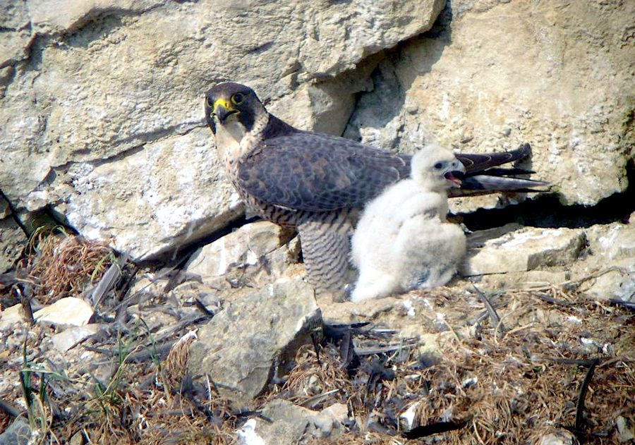

शाहीनPeregrine Falcon
Falco peregrinus · Falconidae · BRD-0228

- Scientific name वैज्ञानिक नाम
- Falco peregrinus Tunstall, 1771
- Family कुल
- Falconidae
- Hindi हिंदी
- शाहीन
- Local names स्थानीय नाम
- shaheen, shahin, peregrine falcon, peregrine
- Status here यहाँ की स्थिति
- native
- Movement आवागमन
- Winter visitor
- Known from कहाँ दर्ज
- Others have published records from the Basti–Ayodhya districts बस्ती–अयोध्या के ज़िलों से दूसरों के प्रकाशित अभिलेख
- IUCN IUCN
- LC
- Review समीक्षा
- audited and independently read
When to look कब देखें
Winter visitor शीतकालीन प्रवासी. Expected mainly in October, November, December, January, February, March. मुख्यतः अक्टूबर, नवंबर, दिसंबर, जनवरी, फ़रवरी, मार्च में अपेक्षित।
Arrives in October from breeding grounds in central Asia and Himalayas; departs by March. Expected on open plains and near water bodies. Handbook of the Birds of India and Pakistan (Ali & Ripley 1968) documents winter distribution across the Gangetic plain. All migrants and visitors →
Tell it apart from इनसे अलग पहचानें
शाहीन / Peregrine Falcon
Falco peregrinus Tunstall, 1771 — Falconidae
शाहीन — सर्दियों में हिमालय और मध्य एशिया से आने वाली सबसे तेज़ शिकारी चिड़िया, जो दूसरी पक्षियों को हवा में पकड़ती है। इसकी काली टोपी, सफ़ेद गाल और तेज़ आँख इसे पहचान देती हैं। डाइविंग करते समय यह सबसे तेज़ जानवर (300 किलोमीटर/घंटा) होता है।
Quick Identification त्वरित पहचान
| Feature | Description |
|---|---|
| Size | Medium-large; 36–50 cm long, females larger |
| Back and wings | Blue-grey; pointed wings |
| Head | Black cap extending below eyes; white cheeks |
| Moustache | Black "malar" stripe below eye, diagnostic |
| Underparts | White or buff with barring |
| Eyes | Very dark; intense expression |
| Legs and cere | Yellow |
| Flight | Extremely fast; rapid wing beats |
Field tip: A medium-sized falcon with a distinctive black cap and white cheeks marked with a black malar stripe. The combination of these markings is unmistakable. Often seen perched on high vantage points or soaring. Characteristic diving attack on other birds is diagnostic. Can reach speeds over 300 km/h in a stoop.
हिंदी — कैसे पहचानें:
काली टोपी, सफ़ेद गाल, मूंछ जैसी लकीर।
बहुत तेज़ उड़ता है; पक्षियों को पकड़ता है।
ऊंची जगह पर बैठता है।
डाइविंग करते समय बहुत शोर करता है।
Morphology आकारिकी
Biometrics:
| Measurement | Range |
|---|---|
| Total length | 360–500 mm (females larger) |
| Wingspan | 950–1200 mm |
| Wing (flattened chord) | 280–330 mm |
| Tail | 130–150 mm |
| Bill | 17–20 mm |
| Tarsus | 32–40 mm |
| Weight | 600–1300 g (females 900–1300 g; males 600–750 g) |
Size: 36–50 cm long; wingspan 95–120 cm. Females notably larger than males (sexual dimorphism pronounced).
Plumage (adult): Back, rump, and wings blue-grey. Flight feathers darker with barring. Head black cap extending below eyes to ear coverts. Face white or buff. Black malar stripe ("moustache") below eye is diagnostic. Underparts white or buff with heavy dark barring. Thighs rufous.
Plumage (female): Similar to male but larger and often darker overall, particularly on the back.
Plumage (juvenile): Darker brown above; heavily streaked below (less barred than adult); facial markings less distinct.
Eyes: Very dark brown, almost black; forward-facing and intensely sharp.
Bill: Hooked at tip; yellow cere and gape; dark tip. Relatively short and powerful.
Legs and feet: Yellow; talons curved and very sharp for gripping prey.
Wings: Long and pointed; swept-back appearance in flight gives a "cross" silhouette characteristic of fast-flying falcons.
Tail: Rounded when fanned; aids in maneuvering during high-speed pursuits.
Vocalisations. Call repertoire:
- Territorial call: A rapid, harsh kee-kee-kee-kee, given from perch during breeding season.
- Copulation call: A soft, twittering chitter-chitter-chitter.
- Alarm call: A sharp weepit or wip-wip when defending territory.
- Prey call: Loud, excited screaming at kill site.
हिंदी: तेज़ "कीह-कीह-कीह" की आवाज़। शिकार मिलने पर जोर से चिल्लाता है।
Behaviour & Ecology व्यवहार और पारिस्थितिकी
Hunting and diet: Peregrine Falcons are aerial predators specializing in bird capture. Prey includes:
- Shorebirds (plovers, sandpipers, gulls)
- Doves and pigeons
- Small to medium songbirds
- Occasionally: bats, small reptiles
Hunting technique: The "stoop" is the Peregrine's characteristic hunting method. The falcon climbs high above prey, folds its wings, and dives at extreme speed (over 300 km/h or 190 mph), striking the prey in mid-air with a clenched fist. Impact is often lethal. The falcon then maneuvers to catch the falling prey before it hits the ground.
Social behaviour: Solitary or in pairs. Winter visitors may be somewhat gregarious, with several birds hunting in the same area. Males and females hunt independently.
Perching: Often perches on high lookouts—tall trees, cliff faces, utility poles, or buildings—from which to survey hunting grounds.
Territorial: Winter visitors establish hunting territories and defend them against intruders.
Roosts: Nocturnal roosts on cliff faces, tall trees, or high buildings.
Predators: Adult Peregrine Falcons are apex predators with few natural enemies. Chicks and eggs vulnerable to ravens and eagles on breeding cliffs.
हिंदी: आकाश में अकेले शिकार करता है। बहुत तेजी से गोता लगाता है और पक्षियों को हवा में पकड़ता है। ऊंची जगह से शिकार देखता है।
Life Cycle / Phenology जीवन चक्र
Winter visitor: Absent during breeding season (April–August); returns to eastern UP from September–October and remains through February or March.
Arrival and departure: First birds arrive in September; numbers peak in December–January; departure begins in February, with most birds gone by late March.
Breeding grounds: Breeding range in the Himalayas from Kashmir to Arunachal Pradesh and in central Asia. Does not breed in the plain regions visited during winter.
Roosts: Nocturnal roosts on cliff faces, large trees, or high structures.
Moult: Prebasic moult occurs before autumn migration; birds arrive in non-breeding plumage.
हिंदी: सितंबर में आता है, मार्च तक रहता है। हिमालय में प्रजनन करता है। रात को ऊंची चट्टानों पर सोता है।
Host Plants or Prey आहार
| Food Type | Examples | Hunting Behaviour |
|---|---|---|
| Shorebirds | Plovers, sandpipers, lapwings | Stoop from high altitude; strike in flight |
| Pigeons and doves | Domestic pigeons, turtle doves | Fast pursuit in open air |
| Small birds | Sparrows, skylarks, buntings | Capture in mid-air; kill by impact |
| Bats | Vespertilionid bats | Nocturnal hunting; skilled at capturing fliers |
| Occasionally small reptiles | Lizards, skinks | Ground or low-level capture |
हिंदी: शिकार की पक्षियों को हवा में पकड़ता है। कबूतर और छोटे पक्षी इसका मुख्य भोजन हैं। चमगादड़ों को भी रात में पकड़ता है।
Predators / Natural Enemies शत्रु
- Avian predators: Imperial Eagle may harass; ravens at nest.
- At nest: Ravens and crows predate eggs and small chicks.
- Parasites: Blood parasites, feather lice.
हिंदी: बड़ी ईगल इसे डरा सकती है। घोंसले में कौवे अंडे खा जाते हैं।
Agricultural / Human Relevance कृषि प्रासंगिकता
Protected status: Protected under the Wildlife (Protection) Act 1972. Schedule I status (highest protection). Hunting, capturing, or poisoning is illegal.
Pigeon husbandry: Peregrine Falcons occasionally take domestic pigeons, and pigeon keepers have historically viewed them as pests. However, losses are minimal relative to other causes of pigeon mortality.
Cultural significance: Featured in falconry traditions globally for centuries. Highly valued for its speed, intelligence, and hunting prowess. In Persian and Indian literature, the Peregrine is a symbol of nobility and courage.
Recovery success: The Peregrine Falcon is a conservation success story. After severe population declines due to DDT pesticide in the mid-20th century (which caused eggshell thinning and reproductive failure), the species has recovered worldwide following pesticide bans. In India, it remains relatively stable.
Ecological indicator: Presence of Peregrine Falcons indicates a healthy prey base of shorebirds and other migratory birds, making it valuable as an ecosystem health indicator.
हिंदी: यह विधि अधिनियम 1972 की अंतर्गत सर्वोच्च सुरक्षा प्राप्त है। इसे मारना या पकड़ना कानूनी रूप से निषिद्ध है।
Expected Locally स्थानीय रूप से अपेक्षित
Not a field record. Written from published accounts for eastern Uttar Pradesh. No confirmed local sighting yet — if you have seen it, that is what the atlas needs.
अभी तक स्थानीय पुष्टि नहीं। यह विवरण प्रकाशित स्रोतों से है, किसी अवलोकन से नहीं।
This species is NOT a field record. The distribution below is based on published sources describing where Peregrine Falcon should be looked for in the Basti–Ayodhya region and where it has been documented by ornithologists in published surveys.
Winter range: Expected in eastern Uttar Pradesh from October to March, particularly over open plains, cultivated areas, and near water bodies where shorebirds congregate.
Habitat preference: Open terrain with good prey availability. River valleys and lake margins where migratory shorebirds concentrate are preferred.
Peak occurrence: November–February, when populations from central Asia have completed southward migration and shorebird prey is abundant.
Published records: GBIF holds published records from these districts.
What a first record would be: A dated photograph showing the bird clearly in a specific location (with GPS coordinates and date) submitted through the About page. The distinctive facial markings (black cap, white cheeks, malar stripe) make identification reliable from photographs.
हिंदी: यह पक्षी स्थानीय रूप से अपेक्षित है। खुले मैदानों और पानी के पास ढूंढें। पहला रिकॉर्ड के लिए स्पष्ट फोटोग्राफ चाहिए।
Distribution वितरण
Global range: Found on every continent except Antarctica. Breeds in Northern Hemisphere (35–70°N); winters in tropics and subtropics. Multiple subspecies recognized.
In India: Occurs as a winter visitor throughout the subcontinent, particularly on large river systems and wetlands where shorebirds congregate.
In Uttar Pradesh: Occurs as a winter visitor across the state, particularly in the Gangetic region.
In Basti district / eastern UP: Regular winter visitor on the Ghaghra and Rapti river systems and associated wetlands; occurs wherever shorebirds concentrate.
Research Questions शोध प्रश्न
- What is the population trend of Peregrine Falcons wintering in eastern UP? Does it correlate with prey availability (shorebird populations)?
- How do wintering Peregrine Falcons partition their hunting territories, and how much do they move between areas?
- क्या सीसे की गोली वाले शिकार से भी इस बाज़ को विषाक्तता का खतरा है?
- What are the specific prey species most frequently captured by wintering Peregrine Falcons in eastern UP wetlands?
- How successful are hunting attempts, and what factors (weather, prey density, experience) influence success rates? (A child can observe a perched falcon and count successful stoops vs. attempts.)
- क्या इसके सर्दियों के आवास से पलायन के समय में जलवायु परिवर्तन का कोई प्रभाव है?
Similar Species मिलती-जुलती प्रजातियाँ
| Species | Key Difference | Hindi | Field Rule |
|---|---|---|---|
| Eurasian Hobby (Falco subbuteo) | Much smaller (28–35 cm); rufous thighs and underparts; russet cheeks | भरत | Hobby is much smaller and has reddish coloring below; Peregrine is larger and blue-grey. |
| Laggar Falcon (Falco jugger) | Larger (38–40 cm); all-rufous cap; yellowish cere | लगड़ | Laggar is darker overall with rufous head; Peregrine has black cap with white cheeks. |
| Merlin (Falco columbarius) | Much smaller (24–30 cm); no malar stripe; rufous underparts | नीली मैना | Merlin is much smaller and lacks the distinctive facial markings of Peregrine. |
| Red-necked Falcon (Falco chicquera) | Smaller (30–34 cm); reddish cap and thighs; yellow cere | तुरुमती | Red-necked is smaller with distinctly reddish coloration; Peregrine is blue-grey and black-capped. |
Field rule: Peregrine Falcon is readily identified by the combination of black cap, white cheeks, and distinctive black malar ("moustache") stripe. No other falcon in the region shows this facial pattern. The blue-grey back and medium-large size are also diagnostic.
Taxonomy & Classification वर्गीकरण
Original description. The species was first described by Matthew Tunstall in 1771 in the Ornithologia Britannica. Type locality England.
Subspecies. Multiple subspecies recognized across the global range. Populations wintering in India belong primarily to F. p. peregrinus (Europe to western Asia) and F. p. calidus (Arctic and central Asia).
Family and order placement. Order Falconiformes; family Falconidae (true falcons, caracaras). The genus Falco contains most of the true falcons and is characterized by the pointed-wing falcon shape.
Phylogenetic notes. Molecular work places Falco peregrinus within a clade of medium to large falcons, closely related to the Barbary Falcon (F. pelegrinoides) and other Holarctic falcons.
IUCN status rationale. The species is assessed as Least Concern (LC) globally. Populations have recovered significantly from the pesticide-induced decline of the 1950s–1970s. The species is adaptable to human-modified habitats (urban environments with pigeon prey and cliff-like tall buildings) and is widely distributed. No major threats currently identified.
हिंदी: यह बाज़ विश्व भर में पाया जाता है। पहले जहर से मरा था, लेकिन अब ठीक हो गया है। भारत में अभी सुरक्षित है।
Photo Gallery फोटो गैलरी
No photos yet — add field photos to media/species/peregrine_falcon/ and run node scripts/sync_photos.js.
Wanted photos:
- Adult perched showing facial markings
- In flight showing pointed wings and streamlined profile
- Stoop or dive sequence
- Catch or kill with prey
- Head detail showing malar stripe
- Male and female comparison
References संदर्भ
- Tunstall, M. (1771). Ornithologia Britannica. J. Weston & J. Batley, Norwich.
- Ali, S. & Ripley, S. D. (1968). Handbook of the Birds of India and Pakistan. Vol. 1 (Divers to Hawks). Oxford University Press, Delhi. Pp. 342–348.
- Cramp, S. & Simmons, K. E. L. (1980). Handbook of the Birds of Europe, the Middle East and North Africa: The Birds of the Western Palearctic. Vol. 2 (Hawks to Bustards). Oxford University Press. Pp. 280–318.
- Cade, T. J. (1982). The Falcons of the World. Cornell University Press, Ithaca.
- Monneret, R. J. (2010). Les Rapaces diurnes et nocturnes d'Europe. Delachaux et Niestlé, Paris.
- GBIF Occurrence Data — Falco peregrinus, India. GBIF taxon key: [to be filled].
- IUCN Red List (2024). Falco peregrinus — BirdLife International assessment. IUCN, Cambridge. Status: Least Concern.
Source file: species/fauna/birds/peregrine_falcon.md